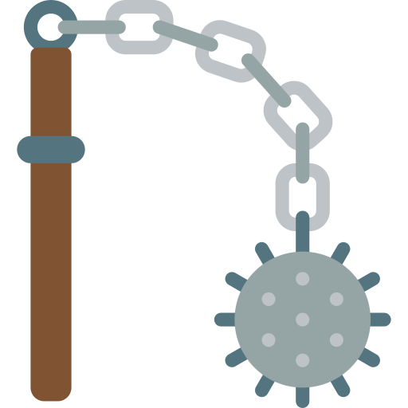
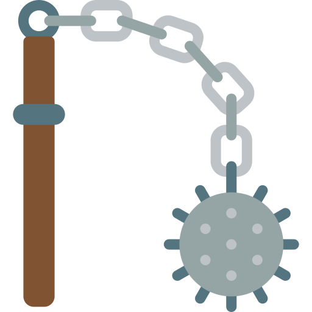

"Bonjour, moi c'est Rodrigo, je suis né en l'an 485."
"Je recherche un emploi dans l'armée en tant que commandant de l’arbalète sacrée"
"Je possède de multiples compétences en gestion et en stratégie de combat"
"Merci de me contacter au 01 02 03 04 05"
1. Bataille de Vouillé - printemps 507 - Attaquant Francs
2. Siège d'Arles - 507-508 - Défenseur Francs et formation sur l’arbalète
3. Bataille du Mont Badon - 516 - Attaquant bretons sur es saxons
4. Siège de Graven - 518 - Commandant de l'armée gravenienne


 
